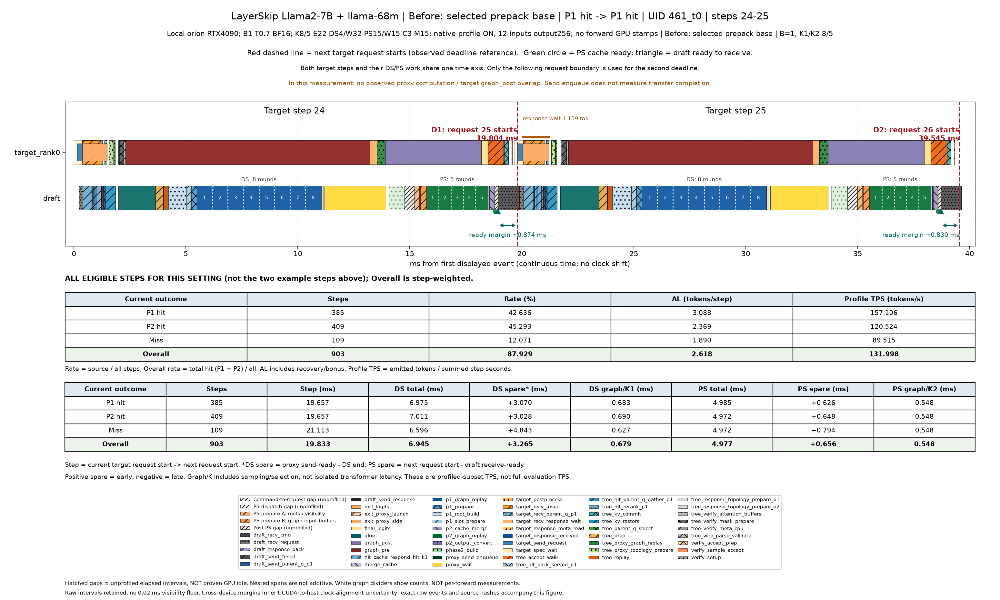
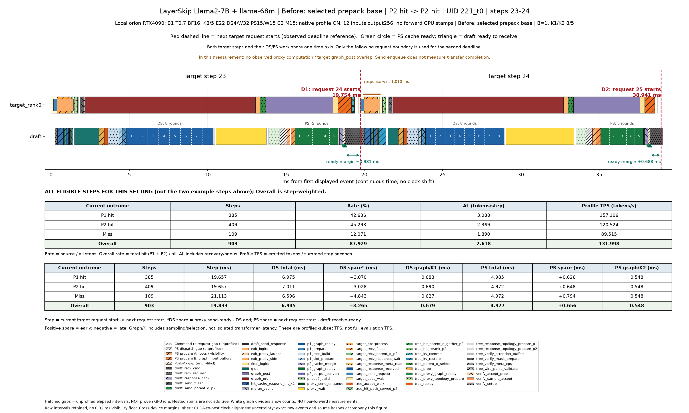
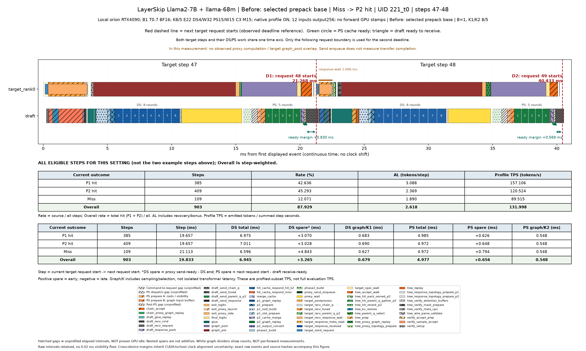
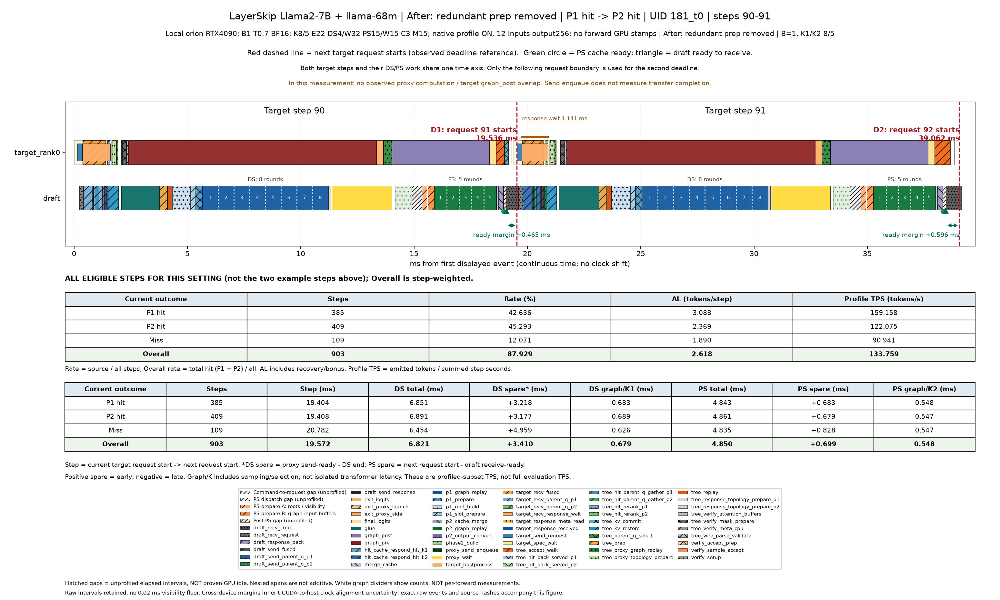
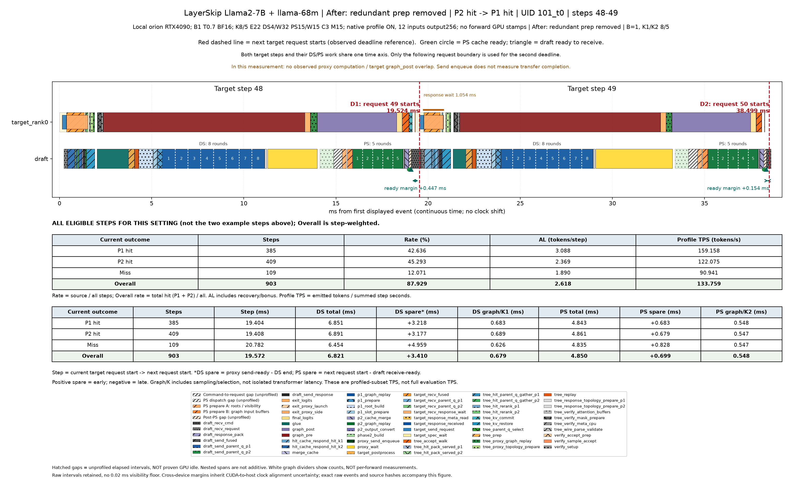
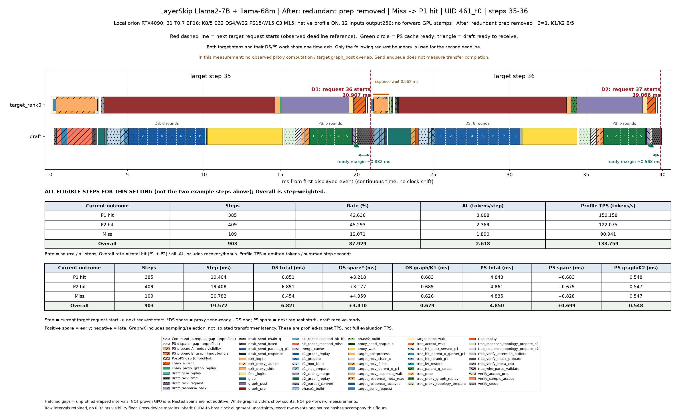

전체 PDF · 설정·해석 · 경우별·전체 평균 CSV · 대표 step 원시 시각
모델마다 PDF 하나입니다. 각 페이지는 같은 요청의 연속 두 step이며 P1 hit / P2 hit / miss를 구분합니다. 같은 모델의 여러 설정은 같은 PDF 안에서 구분합니다.
빨간 점선: 다음 target 요청 시작(deadline 기준). 초록 원: PS cache 완성. 삼각형: draft 수신 준비. 흰 점선은 forward 횟수 표시이며 실측 개별 forward 경계가 아닙니다. 양수 여유 시간이 모두 추가 계산 예산이라는 뜻은 아닙니다.
표는 P1 hit·P2 hit·Miss·Overall(전체 평균)의 네 행입니다. 그림 위의 두 step은 실제 예시이고, 표는 해당 설정의 유효 step 전체 평균입니다. Step: 현재 target 요청 시작→다음 요청 시작. DS/PS total: 준비·정리 포함 phase 시간. DS spare*: proxy 전송 준비 완료−DS 완료(수신 도착 시점은 아님). PS spare: 다음 target 요청 시작−draft 수신 준비. 양수는 여유, 음수는 초과입니다. Graph/K1·K2는 graph 시간을 forward 횟수로 나눈 값이며 sampling·tree 선택을 포함합니다.
분류는 현재 step에서 사용한 cache 기준입니다. 전체 평균은 실제 step 수로 가중합니다. 표본이 없으면 0 대신 N/A입니다.
Rate는 P1/P2 hit·miss의 발생 비율이며, Overall 행에서는 전체 cache hit rate를 표시합니다. AL은 recovery/bonus를 포함한 수락 길이입니다. Profile TPS는 같은 유효 step의 실제 반환 토큰 합÷시간 합으로, profile OFF 또는 전체 데이터셋 TPS와 구분합니다. 토큰 수 기록이 없으면 AL/TPS를 추정하지 않고 N/A로 표시합니다.
Proxy 계산과 target 후반 forward의 중첩 여부는 설정별로 기록에서 계산합니다. exit_proxy_side라는 이름만으로 별도 stream 실행을 뜻하지 않습니다. 전송은 비동기 enqueue만 기록되어 실제 통신 완료·중첩 시간은 알 수 없습니다. Target와 별도 draft GPU의 병렬 실행과는 별개입니다.
기존 raw 기록의 후처리입니다. 측정 버전·환경은 모델별 설명을 확인하세요. 다른 서버/설정의 절대 시간을 직접 비교하여 개선으로 해석하지 않습니다.
Local orion RTX4090; B1 T0.7 BF16; K8/5 E22 DS4/W32 PS15/W15 C3 M15; native profile ON, 12 inputs output256; no forward GPU stamps
Local orion RTX4090; B1 T0.7 BF16; K8/5 E22 DS4/W32 PS15/W15 C3 M15; native profile ON, 12 inputs output256; no forward GPU stamps
| Current outcome | Steps | Rate (%) | AL (tokens/step) | Profile TPS (tokens/s) |
|---|---|---|---|---|
| P1 hit | 385 | 42.636 | 3.088 | 157.106 |
| P2 hit | 409 | 45.293 | 2.369 | 120.524 |
| Miss | 109 | 12.071 | 1.890 | 89.515 |
| Overall | 903 | 87.929 | 2.618 | 131.998 |
Rate: 전체 step 중 해당 경우의 비율. Overall 행은 전체 hit rate(P1+P2 비율). AL은 recovery/bonus 포함. TPS는 같은 유효 profile step의 반환 토큰 합÷시간 합.
| Current outcome | Steps | Step (ms) | DS total (ms) | DS spare* (ms) | DS graph/K1 (ms) | PS total (ms) | PS spare (ms) | PS graph/K2 (ms) |
|---|---|---|---|---|---|---|---|---|
| P1 hit | 385 | 19.657 | 6.975 | +3.070 | 0.683 | 4.985 | +0.626 | 0.548 |
| P2 hit | 409 | 19.657 | 7.011 | +3.028 | 0.690 | 4.972 | +0.648 | 0.548 |
| Miss | 109 | 21.113 | 6.596 | +4.843 | 0.627 | 4.972 | +0.794 | 0.548 |
| Overall | 903 | 19.833 | 6.945 | +3.265 | 0.679 | 4.977 | +0.656 | 0.548 |
Proxy 계산 ↔ target 후반 forward 중첩: 0/903 step, 전체 step 평균 중첩 0.000ms. 전송 완료 시간은 미계측.
유효 step 평균 target query: 13.254개(padding 전), 기존 KV 문맥: 280.532 tokens. Query 수와 문맥 길이는 다른 양이다.
Local orion RTX4090; B1 T0.7 BF16; K8/5 E22 DS4/W32 PS15/W15 C3 M15; native profile ON, 12 inputs output256; no forward GPU stamps
| Current outcome | Steps | Rate (%) | AL (tokens/step) | Profile TPS (tokens/s) |
|---|---|---|---|---|
| P1 hit | 385 | 42.636 | 3.088 | 159.158 |
| P2 hit | 409 | 45.293 | 2.369 | 122.075 |
| Miss | 109 | 12.071 | 1.890 | 90.941 |
| Overall | 903 | 87.929 | 2.618 | 133.759 |
Rate: 전체 step 중 해당 경우의 비율. Overall 행은 전체 hit rate(P1+P2 비율). AL은 recovery/bonus 포함. TPS는 같은 유효 profile step의 반환 토큰 합÷시간 합.
| Current outcome | Steps | Step (ms) | DS total (ms) | DS spare* (ms) | DS graph/K1 (ms) | PS total (ms) | PS spare (ms) | PS graph/K2 (ms) |
|---|---|---|---|---|---|---|---|---|
| P1 hit | 385 | 19.404 | 6.851 | +3.218 | 0.683 | 4.843 | +0.683 | 0.548 |
| P2 hit | 409 | 19.408 | 6.891 | +3.177 | 0.689 | 4.861 | +0.679 | 0.547 |
| Miss | 109 | 20.782 | 6.454 | +4.959 | 0.626 | 4.835 | +0.828 | 0.547 |
| Overall | 903 | 19.572 | 6.821 | +3.410 | 0.679 | 4.850 | +0.699 | 0.548 |
Proxy 계산 ↔ target 후반 forward 중첩: 0/903 step, 전체 step 평균 중첩 0.000ms. 전송 완료 시간은 미계측.
유효 step 평균 target query: 13.254개(padding 전), 기존 KV 문맥: 280.532 tokens. Query 수와 문맥 길이는 다른 양이다.





